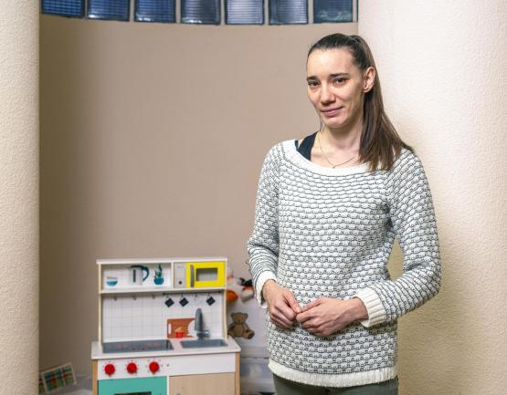
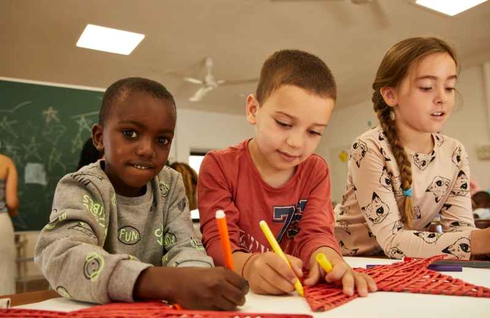
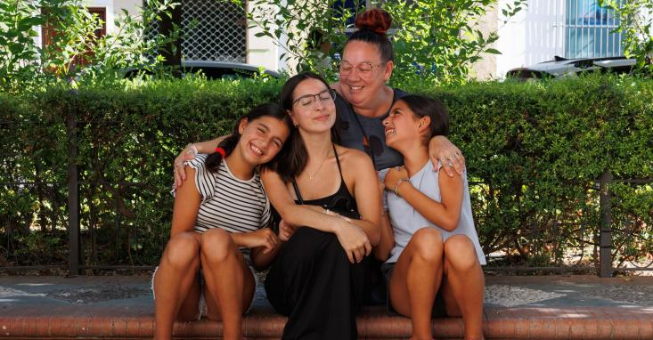
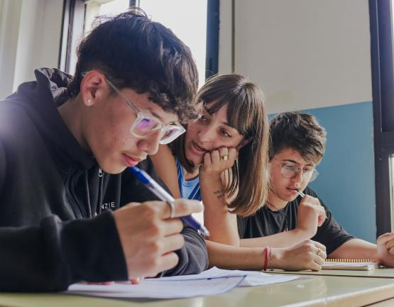
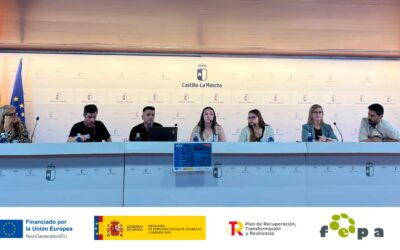

Historias
"Yo me quedé estancado, pero me gustaría que mis hijos llegaran más lejos".
Declaraciones de Ainhoa Torres, madre de Naim, Nian y Asier, y usuaria del programa CaixaProinfancia.
Un futuro con
+EDUCACIÓN.
¿UN LIKE?
.png)

Historias
Declaraciones de Ainhoa Torres, madre de Naim, Nian y Asier, y usuaria del programa CaixaProinfancia.
Infancia
Las aspiraciones hacen referencia a aquello que los estudiantes esperan lograr en el futuro.

Programas sociales
Noticias
El programa 'Más Infancia', de Fundación 'la Caixa' y el Fondo Social Europeo, atiende a más de 8.400 niños.

Familias
En el Día Internacional para la Erradicación de la Pobreza, educación, empleo y salud se unen para cerrar brechas.

Eventos
Juventud
Este estudio exploratorio (2025) examina las prácticas y percepciones lectoras de los jóvenes.

Eventos
Juventud
Primer encuentro territorial en Castilla-La Mancha.
Infancia
El Centro Integrado de Formación Profesional nº1 ha celebrado la IV Feria de la Sostenibilidad.

Innovación
Tecnología
Las herramientas de inteligencia artificial se están implantando rápidamente en los sistemas educativos.

Infancia
Programa social
La Fundación "la Caixa" impulsa el futuro de 67.000 niños en situación de vulnerabilidad.